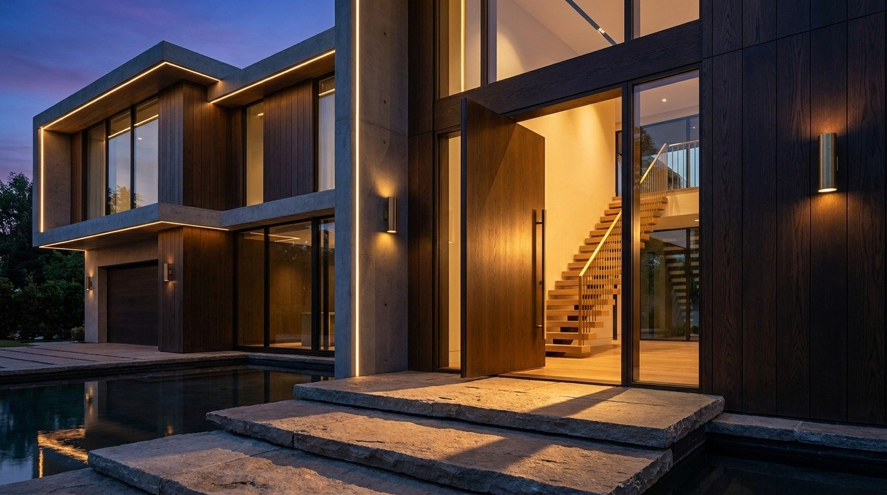
01
The Threshold
A three-metre pivot door opens onto a floating oak stair, where natural light draws you into the house.
Surrey Hills · England
A contemporary residence shaped by light, landscape and the quiet precision of glass.
01 · The Living Volume
≈ 75 m² principal salon · a book-matched stone fireplace, hand-built Italian seating and full-height glazing overlooking the valley.
02 · The Kitchen
≈ 40 m² · a single book-matched marble volume, handleless oak joinery and fully integrated Gaggenau appliances.
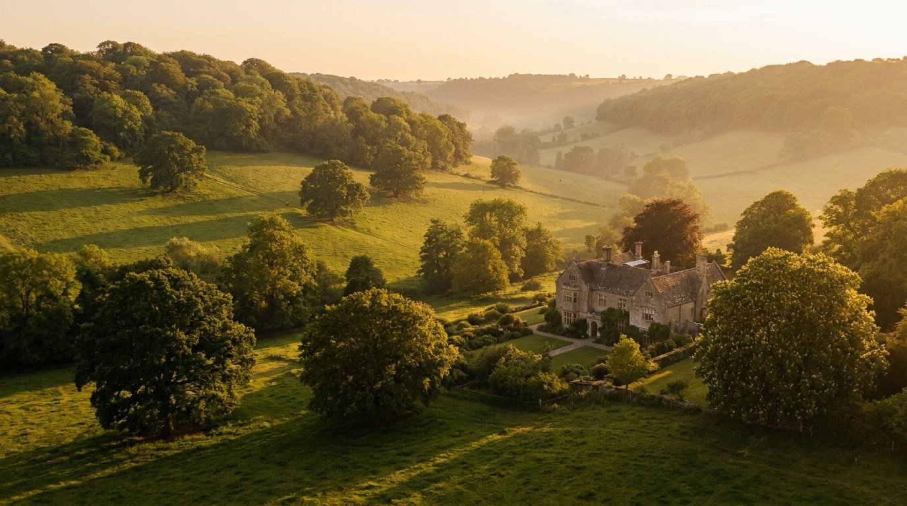
The Approach
A quarter-mile private drive winds through mature parkland before the Pavilion comes into view. The approach is deliberate: the landscape sets the pace, allowing the architecture to reveal itself.
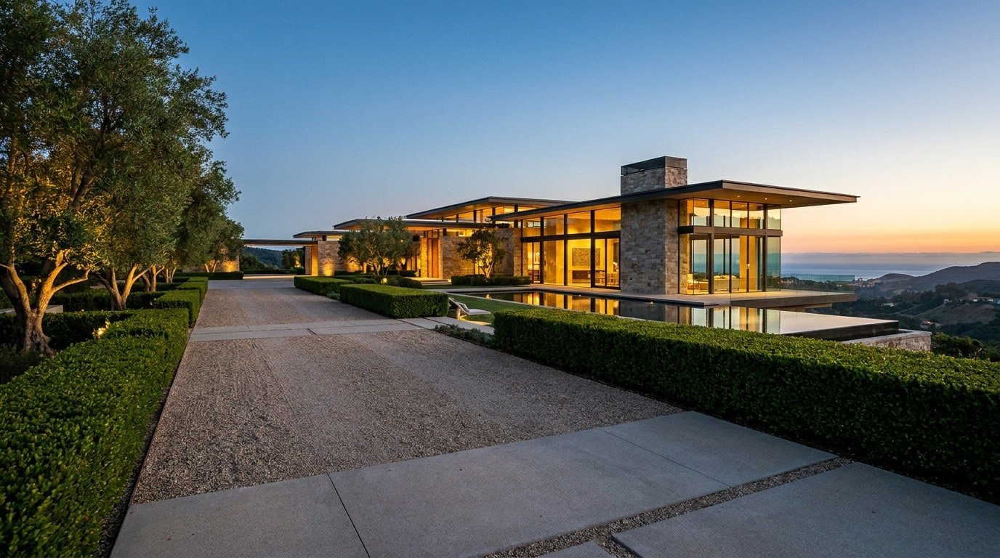

01
A three-metre pivot door opens onto a floating oak stair, where natural light draws you into the house.
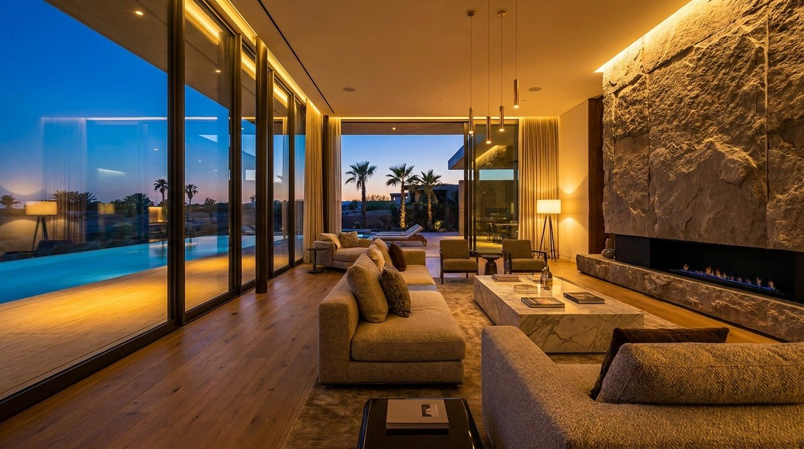
02
Full-height glazing draws the valley into the principal salon, softening the boundary between inside and out.
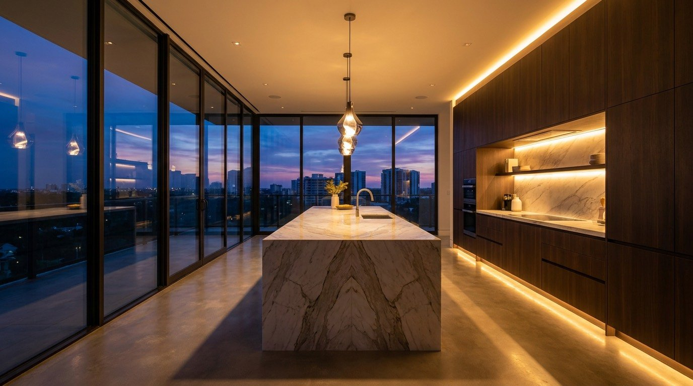
03
A book-matched marble island anchors the room, balanced by handleless oak joinery and integrated appliances.
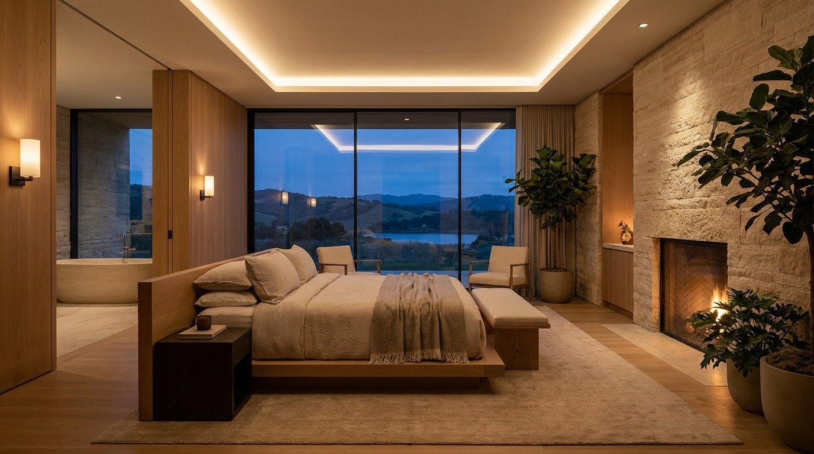
04
Oak and stone create a calm, tactile retreat for the quiet minutes after sunset.
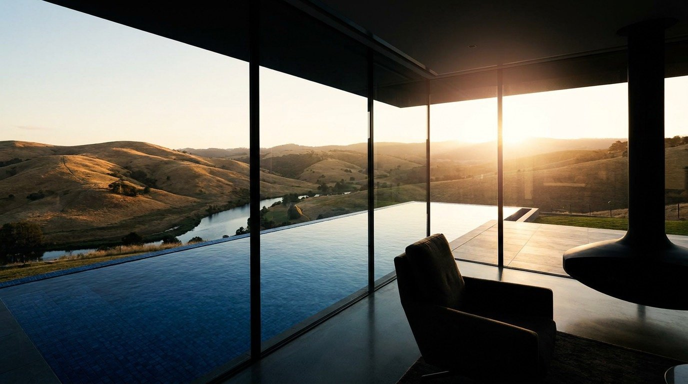
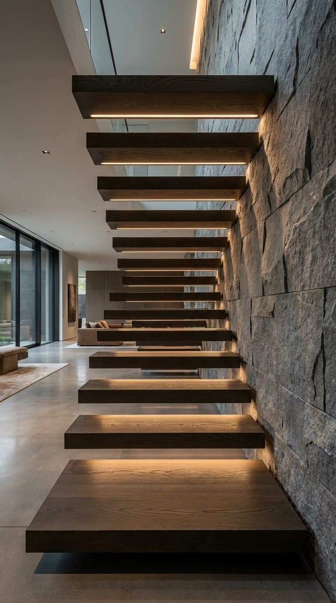
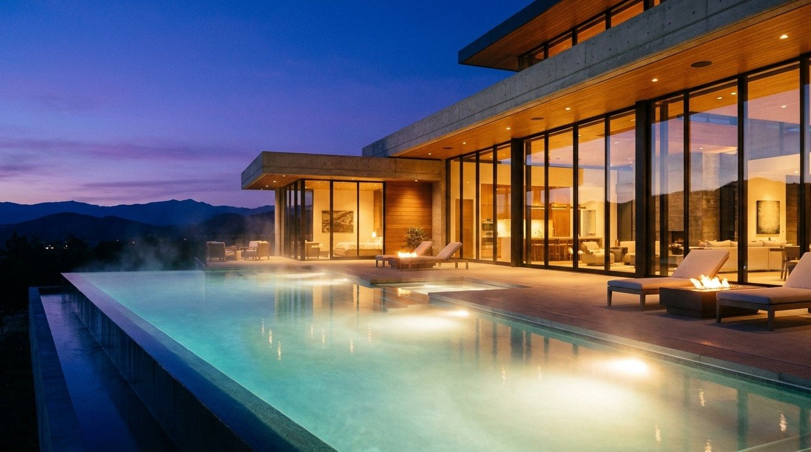
The Day's End
A heated infinity edge meets the horizon. Beyond it, the Surrey Hills settle into the last light of day.
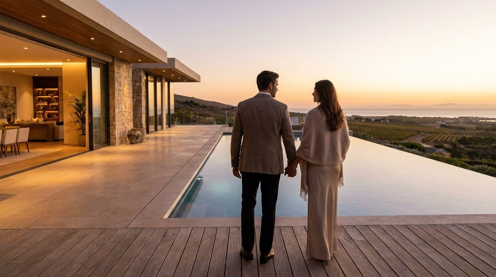
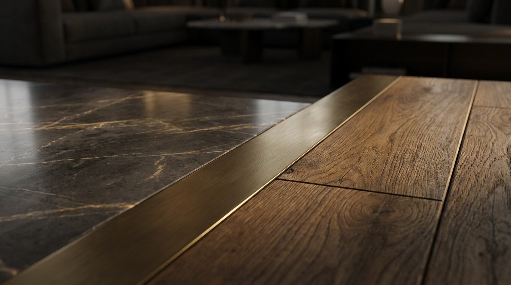
The Specification
Bedroom suites
Bathrooms
Sq ft internal
Acres of grounds
Guide price · £14,500,000
By Appointment